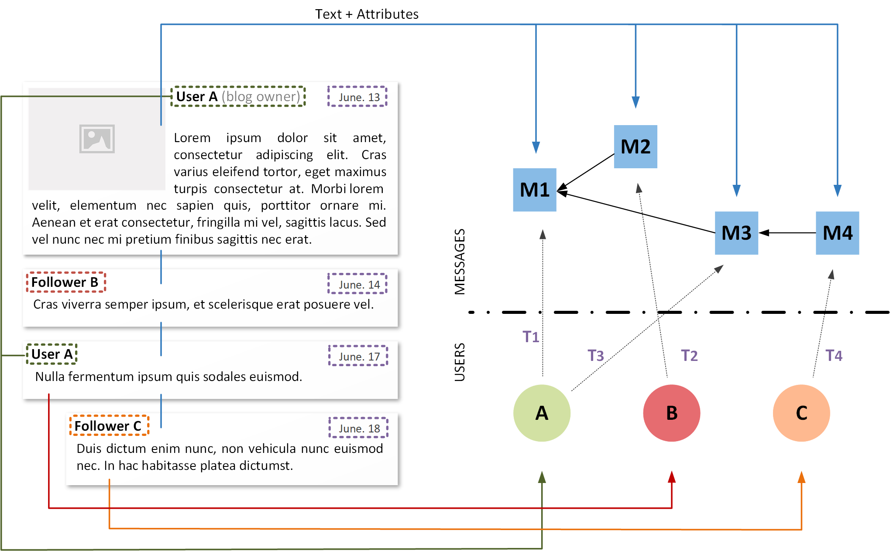

Modeling online communication
Human-generated information underlies nearly every aspect of our lives. With the rise of afordable handheld and embedded IoT devices with new connectivity capabilities and the ever-increasing integration of many technologies with social media platforms, most social activities and decision-making are increasingly relying on online communication. Examples include socio-economical decisions, news verification, political debates and social movements.
Understanding how people interact with this information is undoubtedly very valuable, as shown for example by the large revenues of big Internet companies and its usage during political campaigns. However, despite its various benefits, communication in social media platforms can be very noisy, hiding the actual relevant information behind a plethora of incoherent and intertwined conversations that are often dicult to comprehend. The primary purpose of this project is to study methodologies and develop techniques and tools to monitor Social Network Sites and to identify relevant structural and communication patterns.
The Temporal Text Network Model
The starting point of this project is the temporal text network model we introduced in a recent paper, which is an expressive and simple model to encode the key components of human information networks (topology, time and text) into a single multiplex network, so that it can represent a range of different forms of communication and data sources spanning from postal services to online social media. The model can be analyzed directly to perform a variety of mining tasks, allowing to reuse part of the machinery already developed to analyze complex data.
